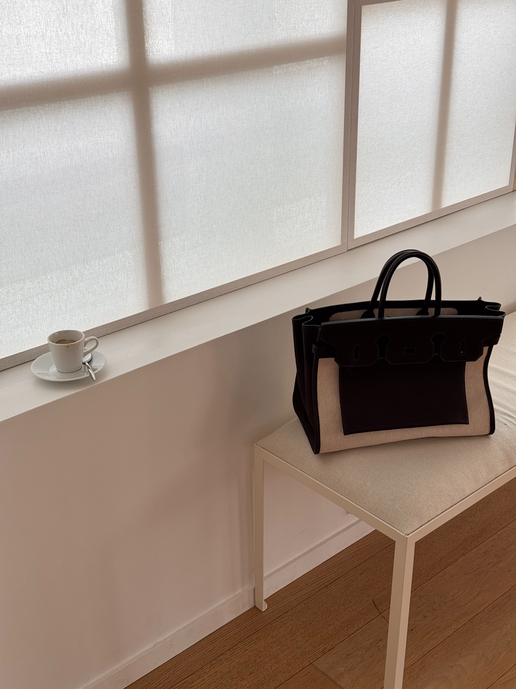
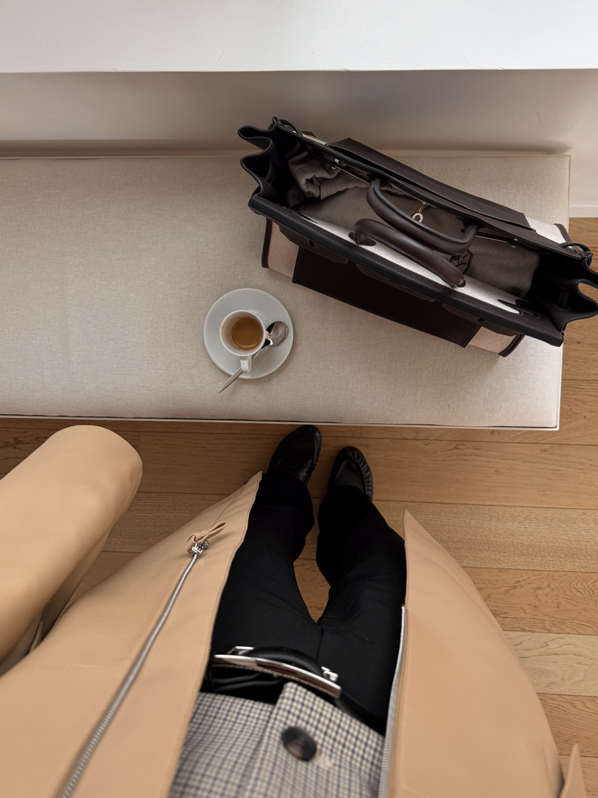

The Hermès Birkin, Reimagined
The classic Hermès Birkin bag was unveiled in an eye-catching new design at the Parisian SS25 showing — translating to the 'upside down Birkin'. The design concept involves artisans deliberately skipping the final construction step, leaving the bag's interior visible. It's a bold, almost radical departure from traditional craftsmanship — and it works.
What Makes It So Significant
To understand why this is such a statement, you have to appreciate how revered the Birkin's construction process is. Every stitch, every edge, every interior detail is ordinarily concealed by design. Turning it inside out is Hermès essentially saying: look at what we do, and trust that the craftsmanship is just as beautiful on the inside.
Are you heading to Paris soon? My Paris Travel Guide has everything you need — from where to stay and where to eat, to the best hidden spots near the Hermès flagship on Rue du Faubourg Saint-Honoré.

